Background
While most cities use a variety of measures to control traffic, including speed limits, one-way streets, stop signs, and traffic lights, cars remain generally free to make turns at intersections (as long as there are no signs preventing, for example, no left-hand turns). A “typical” intersection of two streets with two-way traffic looks something like this:
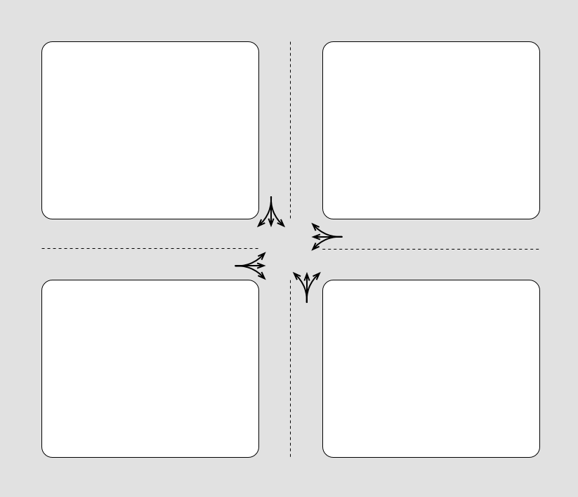
This configuration is what we will refer to as an “open” street grid, where traffic is generally un-restricted in terms of the ability to turn at intersections.
St. Louis, however, has used wholesale closures of roadways since the 1970s to prevent traffic from flowing freely through many of the city’s neighborhoods. Beginning in the 1970s, the City’s local legislative body known as the Board of Alderman - its version of a City Council - began authorizing the installation of barriers around the city. As these number of closures has increased, we have moved in many neighborhoods from having an “open” street grid where traffic flows easily to having a “closed” street grid with some neighborhoods becoming increasingly difficult to navigate.
Defining Barriers
In our research, we define a closure as:
Any physical barrier installed on a temporary or permanent basis that closes a roadway to at least one direction of travel. New roadway construction that achieves the same is also treated as a closure.
We do not count so-called “traffic calming” interventions, which often use the same concrete materials (particularly balls and “Schoemehl Pots”) to constrict but not occlude intersections. These are not counted because traffic still moves through these intersections, only at a possibly slower rate.
Types and Examples of Barriers
Keep in mind that these closures were never systematically tracked or planned by City officials. However, they do follow a number of patterns in their design and installation. The first two types listed below, simple closures and cul-de-sacs, are by far the most common types of barriers in the city. The others on this list occur with far less frequency.
1. Simple Closure
One of the most common configurations involves a set of either concrete or metal obstacles placed across one street at an intersection so that vehicles on the closed street must make a u-turn, and no traffic on the other streets can traverse the closed street:
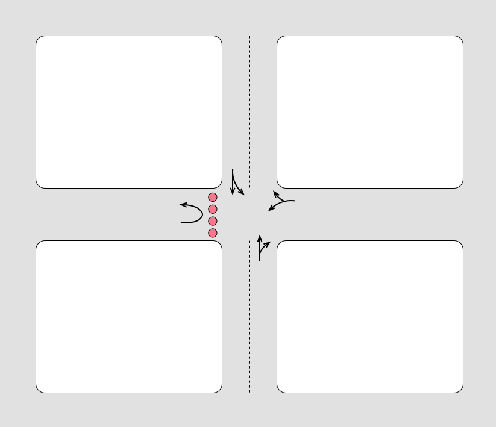
The materials used for these closures include concrete balls, jersey barriers, concrete planters known as “Schoemehl Pots” (named for a former mayor of St. Louis), and metal and brick gates. An example of “Schoemehl Pots” can be found at barrier 198, found at the intersection of Enright Avenue and North Newstead Avenue in the Vandeventer neighborhood:
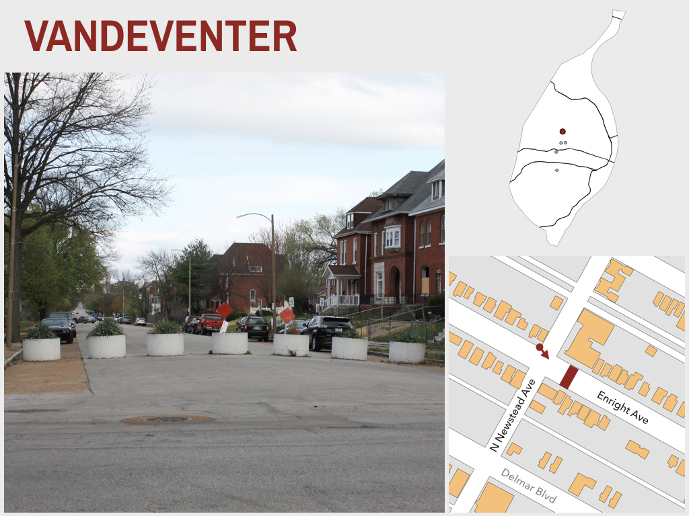
2. Cul-De-Sac
Another common configuration of closure involves the construction of cul-de-sacs. The implications for traffic flow are the same as with simple closures, with traffic on the closed street forced to make a u-turn in the cul-de-sac and traffic on the other streets unable to traverse the closed street:
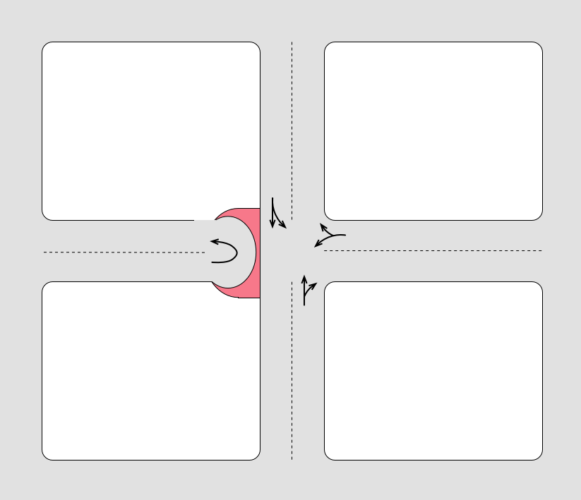
An example of this type of closure is barrier 130, found at the intersection of Botanical Avenue and Tower Grove Avenue in the Shaw neighborhood:
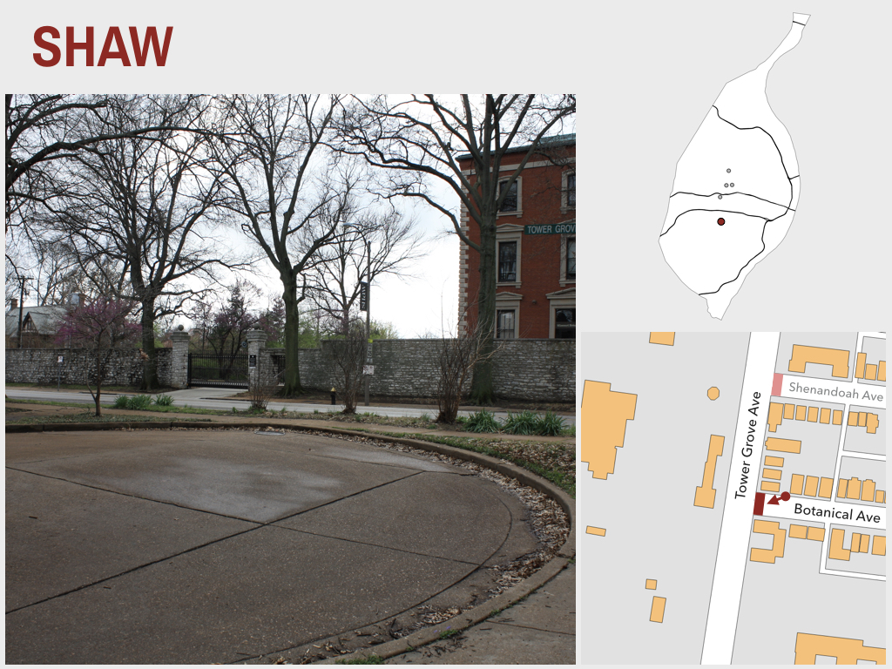
A variation of these occurs on some streets that only would have a three way intersection, so traffic on the cross street is forced to continue driving straight rather than having the option to turn left or right onto the closed street.
3. Small Parks
In some cases, closures have been used to create [pocket parks](). The impact of these is the same as both simple closures and cul-de-sacs, but the land use is different. Whereas cul-de-sacs may have a few small plantings, the pocket parks involve far more square feet and more extensive landscaping. These increase the green-space in a neighborhood by occupying a larger space between the intersection the (typically) a cul-de-sac than other closures:
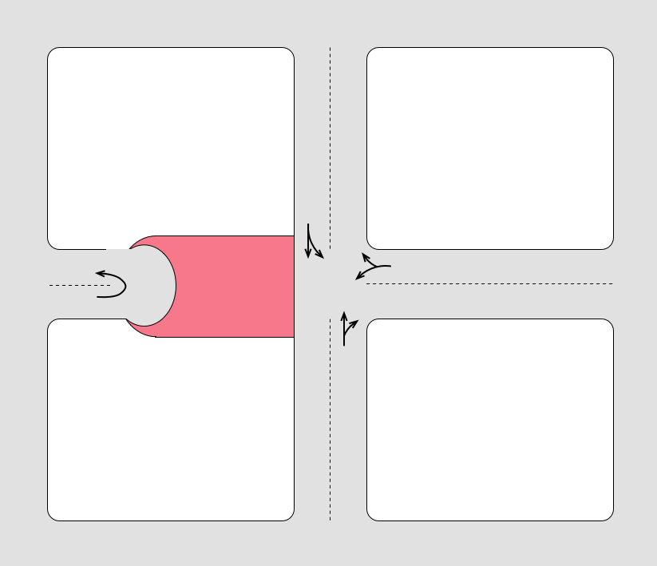
These small parks take on different forms, with ornamental plantings being more common. However, there is at least one example of these being used as a community vegetable garden. This can be seen at barrier 178 in the Central West End:
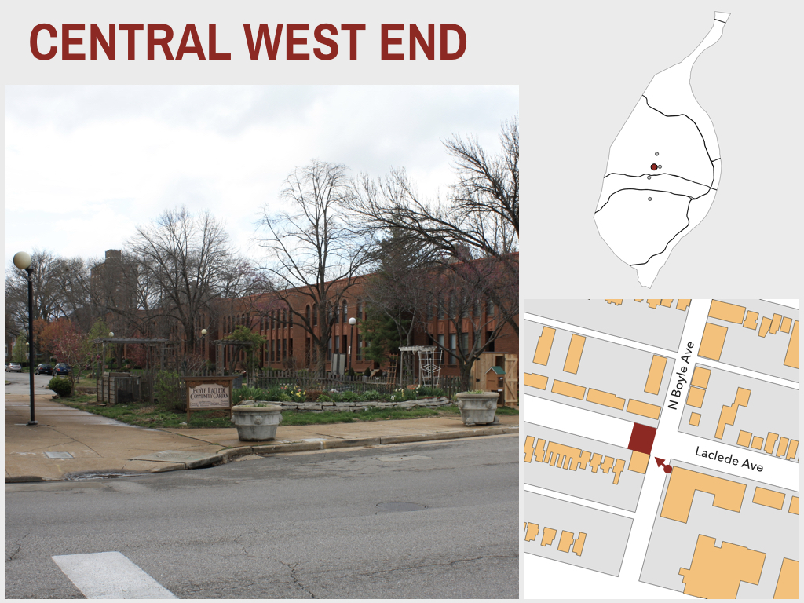
4. Larger Parks
In a few cases, larger parks have been built that transform an existing street or ally into a park for several blocks. This has the effect of occluding traffic both on the former street, but also on cross streets that are barricaded on either side of the park itself:
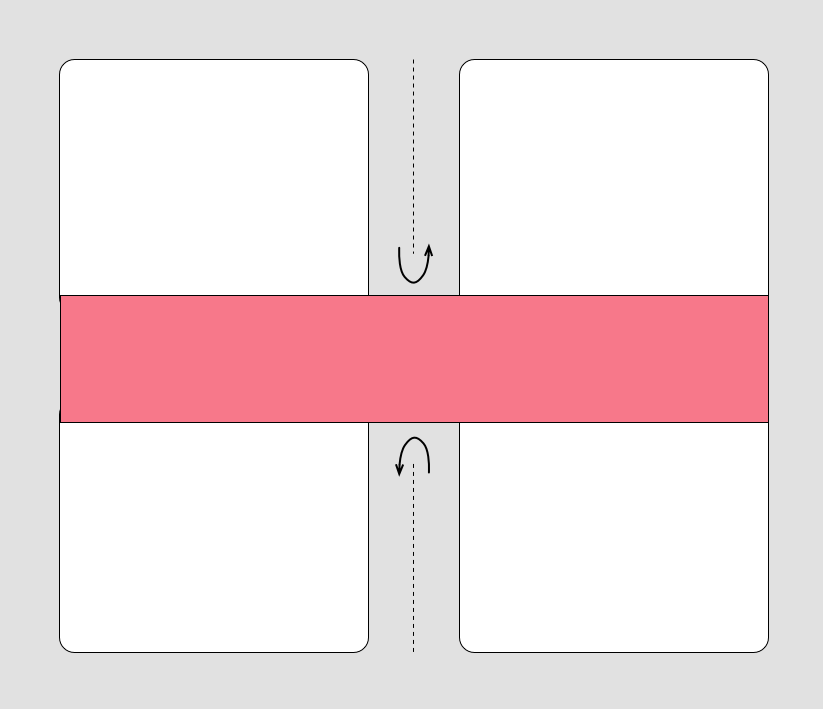
An example of this type of closure is the Ruth C. Porter Mall in the West End neighborhood is a good example of this. Four blocks along this park are cut in two by the park itself, with barriers on either side of the park closing Cates Avenue, Cabanne Avenue, Enright Avenue, and Etzel Avenue.
5. Multiple Closures
In some cases, we see multiple closures at a single intersection. The more common way in which these are installed is to close two opposite sides of an intersection so that traffic can proceed uninhibited on a cross street but cannot turn down either block of the closed street. On both sides of the intersection, traffic on the closed street must make a u-turn instead of being able to turn onto the cross street:
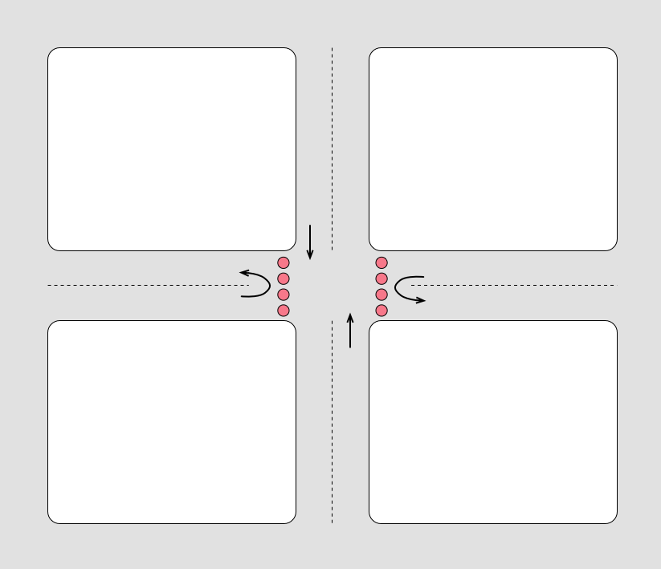
An example of this type of closure is barrier 176, pictured below, which found on the west side of the intersection of Gibson Avenue and South Newstead Avenue in the Forest Park Southeast neighborhood:
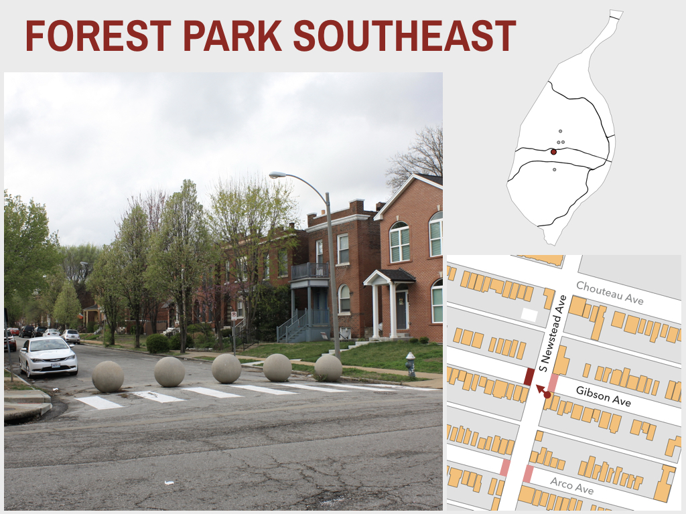
Directly across the street from that barrier is another, barrier 177, that blocks the east side of the intersection of Gibson Avenue and South Newstead Avenue:
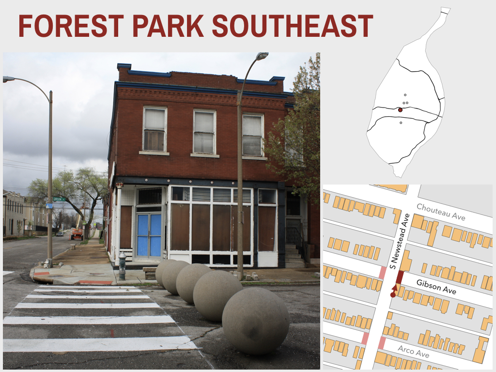
Occasionally, however, we see barriers installed both streets so that traffic is forced to turn either right or left, depending on the original direction of travel:
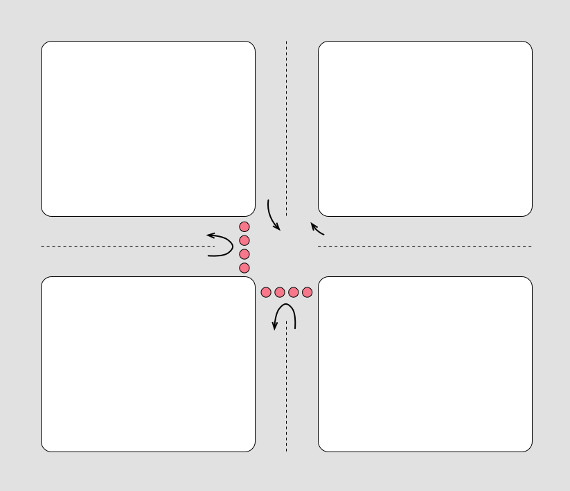
6. Partial Closures
At a small number of intersections we see what we describe as partial closures. These take on a number of different forms. At a handful of locations, including barrier 211, there are closures that do not close off any of the intersecting streets completely. However, the barrier itself cuts across the entirety of the intersection at a 45-degree angle, forcing cars to turn from one street to the other:
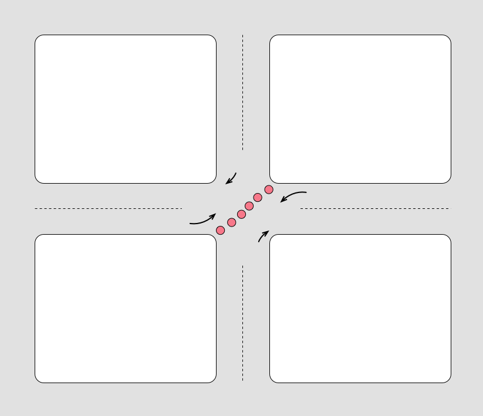
At two locations in the Shaw neighborhood, barriers 312 and 313, there are partial closers that differ in two ways from the examples above. It involves one-way streets, unlike many of the previous styles of closures. This specific style of closure allows some movement from each of the intersecting streets, like the first partial style of closures, but prevents movement in specific directions. The “closed” street on the west side of the hypothetical intersection can only make a left-hand turn. The corresponding block to the east cannot travel into the closed block, nor can northbound traffic turn left onto the closed block.
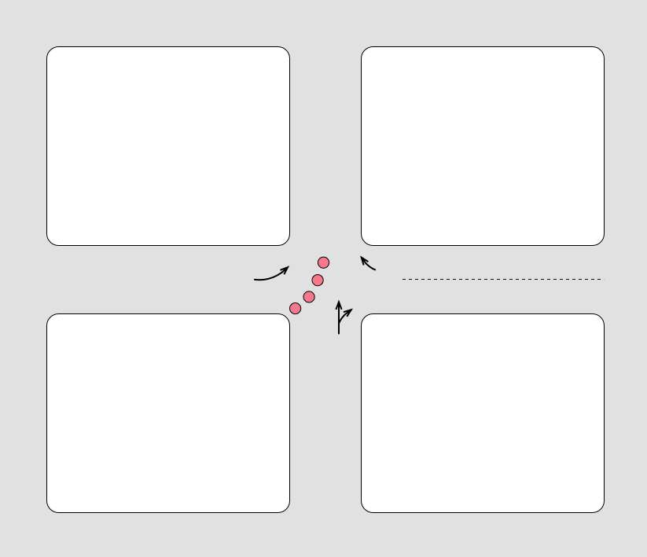
A final type of partial closure, of which there is only one current example in the Central West End at barrier 330, has a similar impact. It specifically prevents one direction of travel on the east bound block of the example below:
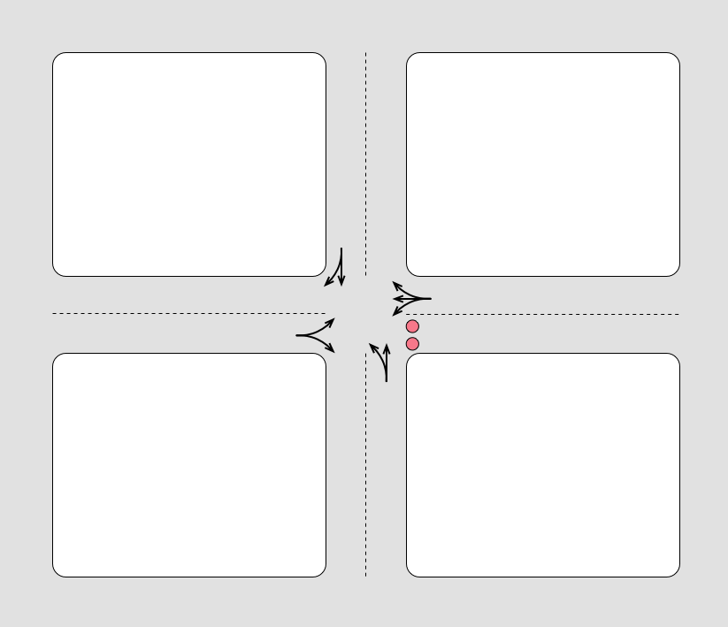
7. Mid-block Closures
Finally, we see a small number of examples in St. Louis of mid-block closures, which allow two-way travel on both sides of the barrier but prevent traffic from fully traversing the block itself:
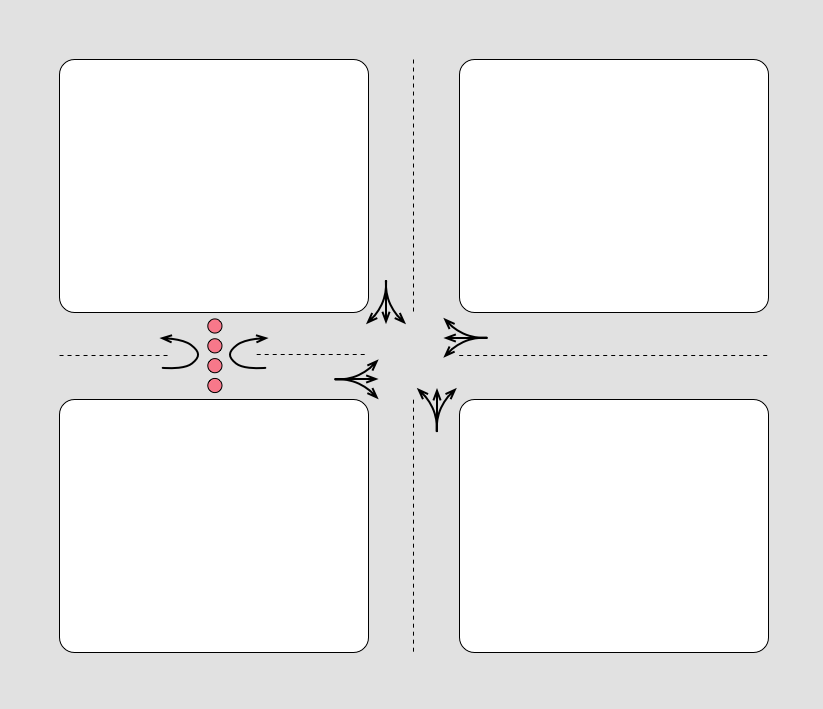
Examples of this type of closure include barrier 307 in the Central West End, barriers 6 and 8 in the Riverview neighborhood, and barrier 317 in Tower Grove East.